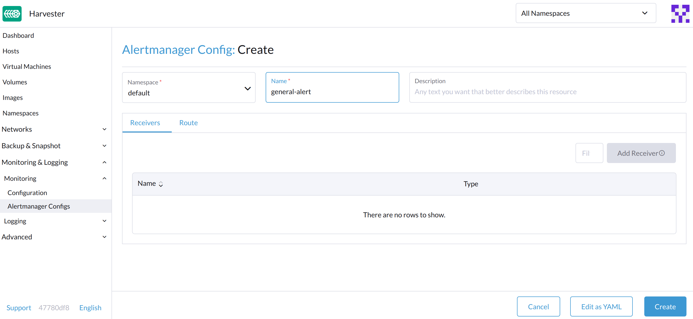
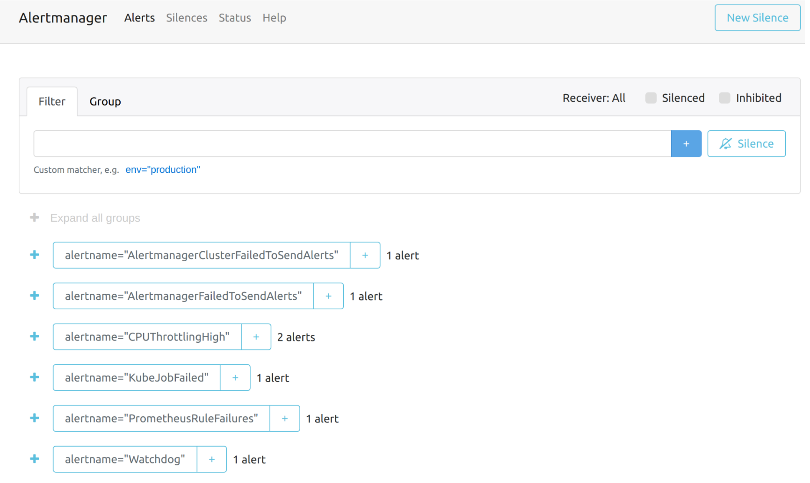
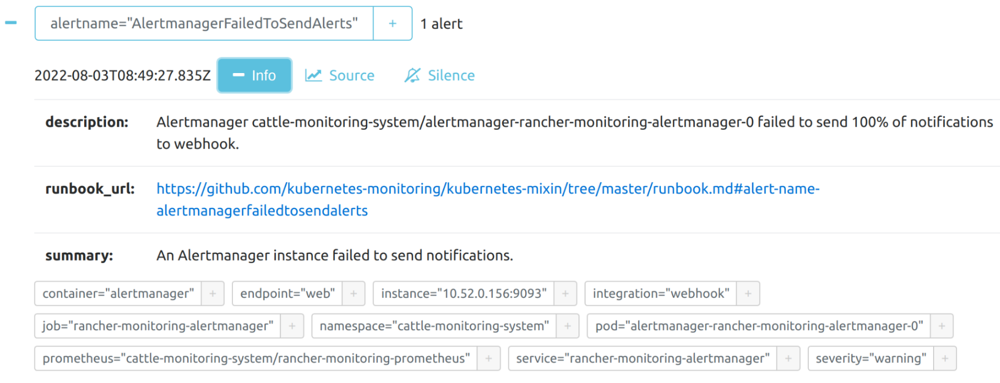

|
この文書は自動機械翻訳技術を使用して翻訳されています。 正確な翻訳を提供するように努めておりますが、翻訳された内容の完全性、正確性、信頼性については一切保証いたしません。 相違がある場合は、元の英語版 英語 が優先され、正式なテキストとなります。 |
監視
ダッシュボードメトリクス
SUSE Virtualizationは、 Prometheusを使用したビルトイン監視統合を提供しています。監視はインストール中に自動的に有効になります。
`Dashboard`ページから、ユーザーはクラスターのメトリクスと最も使用されているVMメトリクスのトップ10をそれぞれ表示できます。 また、ユーザーは Grafanaダッシュボードリンクをクリックして、Grafana UI上の他のダッシュボードを表示できます。

|
クラスターのダッシュボードメトリクスを表示できるのは管理者ユーザーのみです。 さらに、Grafanaは`rancher-monitoring`によって提供されているため、デフォルトの管理者パスワードは: prom-operatorです。 Reference: values.yaml |
VM詳細メトリクス
VMの場合、`VM details page > VM Metrics`をクリックすることでVMメトリクスを表示できます。

|
現在の`Memory Usage`は`(1 - free/total) * 100% |
例えば、Linux OSでは、`free -h`コマンドは現在のメモリ統計を次のように出力します。
$ free -h
total used free shared buff/cache available
Mem: 7.7Gi 166Mi 4.6Gi 1.0Mi 2.9Gi 7.2Gi
Swap: 0B 0B 0B
対応する`Memory Usage`は`(1 - 4.6/7.7) * 100%`で、おおよそ`40%`です。
ライブマイグレーションのステータスとメトリクス
ライブマイグレーションは、ワークロードのアップタイムを確保するための重要な機能です。rancher-monitoringアドオンを介して、Harvester UIから仮想マシンのライブマイグレーションの進行状況を直接監視できます。
-
*rancher-monitoring*アドオンを有効にします。
-
*仮想マシン*に移動します。
-
リストから仮想マシンを見つけ、その名前をクリックして詳細を表示します。
-
*移行*タブに移動します。
*移行*タブは以下のセクションに分かれています：
-
一般情報：このセクションでは、現在の移行フェーズ、ソースノードとターゲットノード、移行の開始時刻と終了時刻が表示されます。
-
リアルタイムメトリクス：これらのメトリクスはPrometheusによって生成され、_5日間_保持されます。
メトリック 説明 移行データ残りバイト
移行されていないゲストオペレーティングシステムデータの量
移行データ処理済みバイト
すでに移行されたゲストオペレーティングシステムデータの量
移行メモリ転送レート
メモリが転送される速度
Migration Dirty Memory Rate
ゲストのメモリ内でデータが変更されているがディスク上のデータと同期されていない速度
*移行データ残りバイト*の値が*移行データ処理済みバイト*の値が増加するにつれて安定して減少する場合、データは正常に宛先に移行されています。
*移行データ残りバイト*の値が変動し、*移行ダーティメモリレート*が非常に高いままである場合、仮想マシンは大きな負荷にさらされています。場合によっては、これが移行の完了を妨げることがあります。
-
移行イベント：これらの仮想マシン特有のイベント記録はKubernetes APIサーバー（kube-apiserver）によって生成され、_1時間_保持されます。
監視設定の構成方法
監視には、すべてのノード/ポッド/VMからメトリックデータを収集および集約するのに役立ついくつかのコンポーネントがあります。監視に必要なリソースは、ワークロードとハードウェアリソースに依存します。SUSE Virtualizationは一般的なユースケースに基づいてデフォルトを設定し、それに応じて変更できます。
現在、`Resources Settings`は以下のコンポーネントに対して構成できます：
-
Prometheus
-
Prometheus Node Exporter
UIから
*Advanced*ページで、リソース設定を次のように表示および変更できます：
-
Advanced > *Addons*ページに移動し、*rancher-monitoring*ページを選択します。
-
*Prometheus*タブから、リソースのリクエストと制限を変更します。
-
*rancher-monitoring*アドオンの設定を構成し終えたら、*Save*を選択します。*Monitoring*デプロイメントは数秒以内に再起動します。再起動には以前のデータを再読み込みするのに時間がかかる場合があることにご注意ください。

|
UIの構成は、*rancher-monitoring*アドオンが有効な場合にのみ表示されます。 |
最も頻繁に使用されるオプションはメモリ設定です：
-
`Requested Memory`は`Monitoring`リソースに必要な最小メモリです。推奨値は、単一の管理ノードのシステムメモリの約5%から10%です。500Mi未満の値は拒否されます。
-
`Memory Limit`は`Monitoring`リソースに割り当てることができる最大メモリです。推奨値は、単一の管理ノードのシステムメモリの約30%です。`Monitoring`がこの閾値に達すると、自動的に再起動します。
利用可能なハードウェアリソースとシステム負荷に応じて、上記の設定を変更できます。
|
異なるハードウェアリソースを持つ複数の管理ノードがある場合は、より小さい方に基づいてPrometheusの値を設定してください。 |
|
1つのノードにVMが増加してデプロイされると、`prometheus-node-exporter`ポッドはOOM（メモリ不足）により終了する可能性があります。その場合は、`limits.memory`の値を増やすべきです。 |
CLIから
次の`kubectl`コマンドを使用して、rancher-monitoring`アドオンのリソース構成を変更できます：`kubectl edit addons.harvesterhci.io -n cattle-monitoring-system rancher-monitoring。
リソースパスとデフォルト値は次のとおりです：
apiVersion: harvesterhci.io/v1beta1
kind: Addon
metadata:
name: rancher-monitoring
namespace: cattle-monitoring-system
spec:
valuesContent: |
prometheus:
prometheusSpec:
resources:
limits:
cpu: 1000m
memory: 2500Mi
requests:
cpu: 850m
memory: 1750Mi
|
アドオンが無効になっているときでも、構成の調整を行うことができます。ただし、これらの変更はアドオンを再度有効にしたときにのみ有効になります。 |
Alertmanager
SUSE Virtualizationは、クラスター内で発生した/発生しているすべてのアラートを収集および管理するために`Alertmanager`を使用します。
Alertmanager設定

WebUIからAlertmanagerConfigを設定する
アラートをサードパーティのサーバーに送信するには、`AlertmanagerConfig`を設定してください。
-
UIで、*モニタリング & ロギング → モニタリング → Alertmanager設定*に移動します。
-
Alertmanager設定： スクリーンを作成し、名前空間と名前を指定してから、Create をクリックします。

-
作成した構成の名前をクリックします。

-
Add Receiver をクリックします。

-
受信者の名前を指定し、受信者の種類を選択します。

-
必要な設定を構成し、Create をクリックします。

Microsoft Teams または SMS Webhook を設定するには、まず次のコマンドを使用して rancher-alerting-drivers アプリをインストールします：
helm repo add rancher-charts https://charts.rancher.io/
helm repo update
helm install rancher-charts/rancher-alerting-drivers \
--set sachet.enabled=false \ # Set to true if you want to use SMS Webhook
--set prom2teams.enabled=true \ # Set to true if you want to use MS Teams Webhook
--namespace cattle-monitoring-system \
--generate-name詳細な構成手順については、 Receiver Configuration を Rancher ドキュメントでご覧ください。
環境に直接インターネットアクセスがない場合（エアギャップ(された)）、Helm チャートと関連するコンテナイメージを手動でダウンロードし、SUSE Virtualization クラスターにアップロードする必要があります。
-
rancher-alerting-drivers Helm チャートをダウンロードし、パッケージ化します。
helm pull rancher-charts/rancher-alerting-drivers --version <VERSION>
-
必要なイメージをダウンロードします。
docker save -o sachet.tar rancher/mirrored-messagebird-sachet:<VERSION> docker save -o prom2teams.tar rancher/mirrored-idealista-prom2teams:<VERSION>
-
チャートとイメージを SUSE Virtualization クラスターにアップロードします。
-
すべての SUSE Virtualization ノードにイメージをロードします。
docker load -i sachet.tar docker load -i prom2teams.tar
-
SUSE Virtualization クラスターに rancher-alerting-drivers をインストールします。
|
SUSE Virtualization は SUSE Virtualization の一部ではない |
CLI から AlertmanagerConfig を構成します。
CLI から AlertmanagerConfig を追加することもできます。
例：default ネームスペースの Webhook 受信者。
cat << EOF > a-single-receiver.yaml
apiVersion: monitoring.coreos.com/v1alpha1
kind: AlertmanagerConfig
metadata:
name: amc-example
# namespace: your value
labels:
alertmanagerConfig: example
spec:
route:
continue: true
groupBy:
- cluster
- alertname
receiver: "amc-webhook-receiver"
receivers:
- name: "amc-webhook-receiver"
webhookConfigs:
- sendResolved: true
url: "http://192.168.122.159:8090/"
EOF
# kubectl apply -f a-single-receiver.yaml
alertmanagerconfig.monitoring.coreos.com/amc-example created
# kubectl get alertmanagerconfig -A
NAMESPACE NAME AGE
default amc-example 27s
Webhook によって受信したアラートの例。
Webhook サーバーに送信されるアラートは、次の形式になります：
{
'receiver': 'longhorn-system-amc-example-amc-webhook-receiver',
'status': 'firing',
'alerts': [],
'groupLabels': {},
'commonLabels': {'alertname': 'LonghornVolumeStatusWarning', 'container': 'longhorn-manager', 'endpoint': 'manager', 'instance': '10.52.0.83:9500', 'issue': 'Longhorn volume is Degraded.',
'job': 'longhorn-backend', 'namespace': 'longhorn-system', 'node': 'harv2', 'pod': 'longhorn-manager-r5bgm', 'prometheus': 'cattle-monitoring-system/rancher-monitoring-prometheus',
'service': 'longhorn-backend', 'severity': 'warning'},
'commonAnnotations': {'description': 'Longhorn volume is Degraded for more than 5 minutes.', 'runbook_url': 'https://longhorn.io/docs/1.3.0/monitoring/metrics/',
'summary': 'Longhorn volume is Degraded'},
'externalURL': 'https://192.168.122.200/api/v1/namespaces/cattle-monitoring-system/services/http:rancher-monitoring-alertmanager:9093/proxy',
'version': '4',
'groupKey': '{}/{namespace="longhorn-system"}:{}',
'truncatedAlerts': 0
}
|
異なる受信者は、アラートを異なる形式で表示する場合があります。詳細については、関連文書を参照してください。 |
既知の制限事項
`AlertmanagerConfig`は`namespace`によって強制されます。ネームスペースなしのグローバルレベルの`AlertmanagerConfig`はサポートされていません。
すでにアップストリームの変更を追跡するための GitHub issueを作成しました。機能が利用可能になると、SUSE Virtualizationがそれを採用します。
アラートの表示と管理
Alertmanagerダッシュボードから
以下のリンクから`Alertmanager`の元のダッシュボードにアクセスできます。`the-cluster-vip`を実際のクラスターVIPに置き換える必要があることに注意してください：
`Alertmanager`ダッシュボードの全体的なビューは次のとおりです。

アラートの詳細を表示できます：


トラブルシューティング
監視サポートとトラブルシューティングについては、トラブルシューティングページを参照してください。